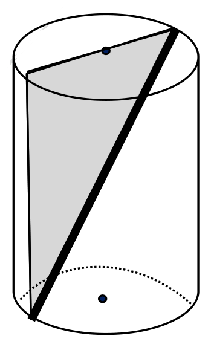
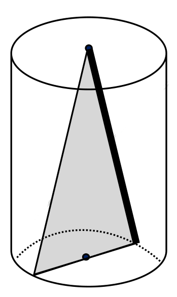
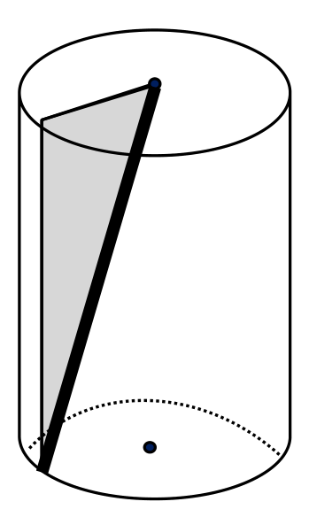
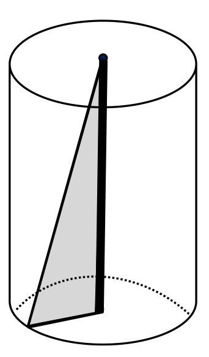

התאימו בין גדלים שווים: בכל שורה השלימו גודל מתוך המחסן.
500 מ״ל1 מ״ל1 ליטר
1 ס״מ³=
1000 ס״מ³=
0.5 ליטר=
שטח בסיס · גובה
21
בתיבה, כאשר שטח הבסיס ידוע, הנפח מתקבל לפי V = B·h. כאן חוזרים על העיקרון לפני שמיישמים אותו בגליל.
השלימו את הנפח בכל שורה.
B
h
חישוב
V
16 ס״מ²
5 ס״מ
16·5 = ____
____ ס״מ³
18 ס״מ²
4 ס״מ
18·4 = ____
____ ס״מ³
25 ס״מ²
6 ס״מ
25·6 = ____
____ ס״מ³
בחרו את החישוב המתאים כאשר B = 20 ס״מ² ו־h = 3 ס״מ.
20 + 3
20·3
20 ÷ 3
אותו בסיס, גבהים שונים
22
כאשר שטח הבסיס קבוע, שינוי בגובה משנה את הנפח באותו יחס.
נתון B = 20 ס״מ². השלימו.
h
חישוב
V
2 ס״מ
20·2 = ____
____ ס״מ³
5 ס״מ
20·5 = ____
____ ס״מ³
8 ס״מ
20·8 = ____
____ ס״מ³
נתון B = 15 ס״מ². השלימו.
h
V
3 ס״מ
____ ס״מ³
6 ס״מ
____ ס״מ³
כאשר B קבוע והגובה מוכפל פי 2, בחרו מה קורה לנפח.
פי 2פי 3ללא שינוי
השלימו את טבלת לפני/אחרי.
B
h לפני
h אחרי
V לפני
V אחרי
12 ס״מ²
4 ס״מ
8 ס״מ
____ ס״מ³
____ ס״מ³
אותו גובה, שטחי בסיס שונים
23
כאשר הגובה קבוע, הנפח משתנה באותו יחס כמו שטח הבסיס. השתמשו בקשר V = B·h.
נתון h = 5 ס״מ. השלימו.
B
h
חישוב
V
12 ס״מ²
5 ס״מ
12·5 = ____
____ ס״מ³
18 ס״מ²
5 ס״מ
18·5 = ____
____ ס״מ³
24 ס״מ²
5 ס״מ
24·5 = ____
____ ס״מ³
נתון h = 4 ס״מ. השלימו.
B
h
V
10 ס״מ²
4 ס״מ
____ ס״מ³
20 ס״מ²
4 ס״מ
____ ס״מ³
כאשר B מוכפל פי 2 והגובה נשאר קבוע, בחרו מה קורה לנפח.
מוכפל פי 2מוכפל פי 4נשאר קבוע
הגובה נשאר קבוע. השלימו את היחס.
B: 15 → 45 ס״מ² ולכן V: 60 → ____ ס״מ³
חישוב ישיר ועבודה לאחור
24
השתמשו בקשר V = B·h. בנפח כותבים יחידות מעוקבות.
השלימו את שלוש שורות החישוב הישיר.
B
h
חישוב
V
14 ס״מ²
3 ס״מ
14·3 = ____
____ ס״מ³
9 ס״מ²
8 ס״מ
9·8 = ____
____ ס״מ³
11 ס״מ²
6 ס״מ
11·6 = ____
____ ס״מ³
עבדו לאחור והשלימו את הגובה.
V = 96 ס״מ³, B = 16 ס״מ² ← h = 96 ÷ 16 = ____ ס״מ
עבדו לאחור והשלימו את שטח הבסיס.
V = 84 ס״מ³, h = 7 ס״מ ← B = 84 ÷ 7 = ____ ס״מ²
בחרו את היחידה הנכונה לכל גודל.
גודל
יחידה
B
ס״מ / ס״מ² / ס״מ³
h
ס״מ / ס״מ² / ס״מ³
V
ס״מ / ס״מ² / ס״מ³
מן הבסיס אל הנפח
25
כאשר שטח הבסיס B והגובה h נתונים, השתמשו בקשר V = B·h.
חשבו את נפח ארבעת הגלילים.
B
h
חישוב
V
14 ס״מ²
5 ס״מ
14·5 = ____
____ ס״מ³
25 ס״מ²
4 ס״מ
25·4 = ____
____ ס״מ³
18 ס״מ²
7 ס״מ
18·7 = ____
____ ס״מ³
40 ס״מ²
2.5 ס״מ
40·2.5 = ____
____ ס״מ³
בחרו את הקשר המתאים לחישוב הנפח.
V = B + hV = B·hV = B ÷ h
כאשר B = 30 ס״מ² ו־h = 1.5 ס״מ, בחרו את הנפח.
20 ס״מ³31.5 ס״מ³45 ס״מ³
נוסחת נפח הגליל
26
בונים את הנוסחה משני קשרים שכבר ידועים: B = π·r² ו־V = B·h.
השלימו את השרשרת.
r
B
h
V
2 ס״מ
π·2² = ____π ס״מ²
5 ס״מ
____π·5 = ____π ס״מ³
3 ס״מ
π·3² = ____π ס״מ²
4 ס״מ
____π·4 = ____π ס״מ³
השלימו מתוך מחסן הקשרים.
V = π·r²·h · B = 2·π·r · V = B·h · B = π·r²
B = ______ V = ______ לכן V = ______
בחרו את נוסחת נפח הגליל שנבנתה מן השרשרת.
V = π·r²·hV = 2·π·r·hV = π·r²
נפח מרדיוס וגובה
27
חשבו לפי V = π·r²·h. בכל שורה חשבו קודם r² ושמרו תשובה מדויקת עם π.
השלימו את שתי השורות המודרכות.
r
r²
h
V
2 ס״מ
____
8 ס״מ
____π ס״מ³
3 ס״מ
____
3 ס״מ
____π ס״מ³
השלימו את ארבע השורות העצמאיות.
r
r²
h
V
4 ס״מ
3 ס״מ
5 ס״מ
2 ס״מ
6 ס״מ
5 ס״מ
7 ס״מ
2 ס״מ
בחרו את סדר החישוב הנכון.
r → r² → ·h → Vr → ·h → r²h² → ·r
נפח עם מספרים עשרוניים
28
חשבו לפי V = π·r²·h. בעמוד זה משאירים את π בתשובה המדויקת.
השלימו את הטבלה.
r
r²
h
V
1.5 ס״מ
4 ס״מ
2.5 ס״מ
2 ס״מ
1.2 ס״מ
5 ס״מ
3.5 ס״מ
2 ס״מ
0.5 ס״מ
10 ס״מ
עבור r = 0.8 ס״מ ו־h = 5 ס״מ, השלימו את השרשרת.
r² = 0.8² = ____ → V = ____·5·π = ____π ס״מ³
בחרו את הנפח עבור r = 0.4 ס״מ ו־h = 10 ס״מ.
1.6π ס״מ³4π ס״מ³16π ס״מ³
נפח מקוטר וגובה
29
כאשר נתון הקוטר, עבדו בסדר: d → r → B → V. אין להציב קוטר במקום רדיוס בנוסחת השטח.
השלימו את השרשרת בכל שורה.
d
r
h
V
6 ס״מ
4 ס״מ
10 ס״מ
3 ס״מ
14 ס״מ
2 ס״מ
8 ס״מ
5 ס״מ
12 ס״מ
4 ס״מ
עבור d = 10 ס״מ ו־h = 3 ס״מ, בחרו את השרשרת התקינה.
d=10 → r=5 → B=25π → V=75π
d=10 → B=100π → V=300π
בחרו מה חייבים לעשות לפני הצבה בנוסחת הנפח כאשר נתון d.
לחלק את d ב־2להכפיל את d ב־2להציב את d במקום r
מאחדים יחידות לפני חישוב
30
אין מציבים בנוסחת נפח נתונים ביחידות שונות. בכל פריט בצעו תחילה המרה ליחידה אחת, ורק אחר כך חשבו.
השלימו שורת המרה ושורת חישוב.
נתונים
המרה
V
r = 30 מ״מ, h = 5 ס״מ
r = ____ ס״מ
____π ס״מ³
d = 80 מ״מ, h = 6 ס״מ
d = ____ ס״מ, r = ____ ס״מ
____π ס״מ³
r = 0.05 מ׳, h = 40 ס״מ
r = ____ ס״מ
____π ס״מ³
d = 0.12 מ׳, h = 50 מ״מ
d = ____ ס״מ, r = ____ ס״מ, h = ____ ס״מ
____π ס״מ³
בחרו את הפעולה הראשונה הנכונה כאשר r במ״מ ו־h בס״מ.
לאחד יחידותלהציב מידלחבר r ו־h
צנצנות הדבש
31
שאלה מתוך תוכנית הלימודים
דרור רצה לקנות צנצנת דבש. בחנות למוצרי טבע שאליה הלך דרור, נמכר דבש בצנצנות שצורתן גליל. דרור מצא שני גדלים של צנצנות. צנצנת אחת הייתה גבוהה פי שניים מהשנייה, אבל קוטר בסיסה היה פי שניים קטן יותר. שתי הצנצנות היו מלאות בדבש. מחירה של הצנצנת הגבוהה הוא 13 שקלים ומחירה של הצנצנת הנמוכה הוא 20 שקלים. איזו צנצנת יבחר דרור, אם רצונו לקנות את הדבש במחיר הנמוך ביותר ליחידת נפח? הסבירו.
נתון d=40 מ״מ ו־h=7 ס״מ. המירו תחילה את הקוטר לס״מ, ורק אחר כך חשבו רדיוס ונפח.
d=____ ס״מ ← r=____ ס״מ ← V=____π ס״מ³
בחרו את השרשרת התקינה כאשר נתון d.
d→r→B→Vd→B→V
במכל שנפחו הפנימי 1600 ס״מ³ יש 980 מ״ל מים. השלימו: כדי למלא אותו חסרים ______ מ״ל.
מעטפת הגליל — מלבן ושטחה
41
כשפורסים את מעטפת הגליל הישר מקבלים מלבן. רוחב המלבן שווה להיקף הבסיס, וגובהו שווה לגובה הגליל.
היעזרו בפריסה והשלימו בעזרת מחסן המילים.
מלבןהיקףגובה
כשפורסים את המעטפת מקבלים .
רוחב המלבן שווה ל הבסיס.
גובה המלבן שווה ל הגליל.
השלימו את נוסחת שטח המעטפת.
שטח המעטפת = רוחב · גובה = היקף הבסיס · גובה = ·π·r·h
חשבו את שטח המעטפת לכל גליל (2·π·r·h).
רדיוס r
גובה h
שטח המעטפת
4 ס״מ
10 ס״מ
____π ס״מ²
3 ס״מ
7 ס״מ
____π ס״מ²
5 ס״מ
9 ס״מ
____π ס״מ²
פחית משקה גלילית: רדיוס הבסיס 3 ס״מ וגובהה 12 ס״מ. עוטפים אותה בתווית שמכסה בדיוק את המעטפת.
שטח התווית = π ס״מ² ≈ ס״מ²
שטח הפנים של הגליל
42
שטח הפנים של הגליל הוא סכום שני הבסיסים והמעטפת. לכן שטח פנים = 2·(π·r²) + 2·π·r·h.
השלימו בעזרת מחסן המילים ואת הנוסחה.
בסיסיםמעטפתפנים
שטח ה של הגליל בנוי משני ה ומן ה.
שטח פנים = 2 · שטח בסיס + שטח מעטפת = 2·π·r² + ·π·r·h
חשבו את שטח הפנים לכל גליל.
רדיוס r
גובה h
שטח בסיסים 2·π·r²
שטח מעטפת 2·π·r·h
שטח פנים
4 ס״מ
7 ס״מ
____π
____π
____π
3 ס״מ
5 ס״מ
____π
____π
____π
יחידת השטח בשלוש העמודות השמאליות היא ס״מ².
קופסת שימורים גלילית סגורה: רדיוס הבסיס 5 ס״מ וגובהה 8 ס״מ. כמה פח דרוש לכיסוי כל פני הקופסה?
שטח פנים = 2·π·5² + 2·π·5·8 = π + π = π ס״מ²
בחרו את הנוסחה הנכונה לשטח הפנים של גליל.
π·r² + 2·π·r·h2·π·r² + 2·π·r·h2·π·r·h
דיון בהשתנות שטח הפנים.
מכפילים את הרדיוס פי 2 (הגובה קבוע). שטח הבסיסים 2·π·r² גדל פי , שטח המעטפת 2·π·r·h גדל פי , ולכן שטח הפנים כולו אינו גדל פי מספר אחד קבוע: נכון / לא נכון.
מגדילים את הגובה ב־1 ס״מ (הרדיוס קבוע). שטח הבסיסים: גדל / קטן / לא משתנה. שטח המעטפת גדל ב־ ס״מ² (כתבו ביטוי בעזרת r).
פריסה ומגלגלים דף לגליל
43
פריסת הגליל בנויה משני עיגולים (הבסיסים) ומלבן אחד (המעטפת). רוחב המלבן הוא היקף הבסיס.
התאימו כל חלק בפריסה לשם שלו: בסיס / מעטפת.
A ו־B הם ה.
C הוא ה.
רוחב C שווה ל של הבסיס.
מגלגלים דף מלבני 12 על 8 ס״מ לגליל בשתי דרכים. בכל דרך הצלע שנעשית להיקף הבסיס משנה את גודל הבסיס.
דרך הגלגול
היקף הבסיס
גובה הגליל
איזה בסיס גדול יותר?
הצלע 12 היא ההיקף
12 ס״מ
8 ס״מ
הצלע 8 היא ההיקף
8 ס״מ
12 ס״מ
מאותו דף אפשר לקבל שני גלילים שונים. באיזו דרך מתקבל נפח גדול יותר, ולמה?
כשהצלע 12 היא היקף הבסיסכשהצלע 8 היא היקף הבסיסהנפח שווה בשתי הדרכים
סמנו נכון או לא נכון.
בפריסת הגליל יש בדיוק מלבן אחד.
נכון / לא נכון
רוחב המלבן שווה לרדיוס הבסיס.
נכון / לא נכון
שני העיגולים בפריסה חופפים.
נכון / לא נכון
מגלגלים דף לגליל
44
שאלה מתוך תוכנית הלימודים
אורכו של דף נייר מלבני הוא 30 ס״מ, ורוחבו 21 ס״מ.
מגלגלים את הדף למעטפת גליל, כך שרוחב הדף הוא בסיס הגליל.
מהו רדיוס הבסיס? מהו נפח הגליל?
מגלגלים את הדף למעטפת גליל, כך שאורך הדף הוא בסיס הגליל.
מהו רדיוס הבסיס? מהו נפח הגליל?
נפח ושטח מעטפת
45
שאלה מתוך תוכנית הלימודים
חשבו את נפח הגלילים ושטחי המעטפת שלהם על פי הנתונים:
r = 3 ס״מ h = 8 ס״מ
שטח ABCD הוא 60 סמ״ר, r = 5 ס״מ
משולשים בתוך גליל
46
שאלה מתוך תוכנית הלימודים
נתונים 4 גלילים שמידותיהם שוות. בתוך הגלילים משולשים שונים.
באיזה מהמשטחים של המשולשים הצלע המובלטת היא הקצרה ביותר? הארוכה ביותר? נמקו.

א

ב

ג

ד
נתוני הגליל: r = 4 ס״מ, h = 10 ס״מ
חשבו את נפח הגליל;
חשבו את שטחי המשולשים, ואת אורך הצלע המובלטת בכל משולש.